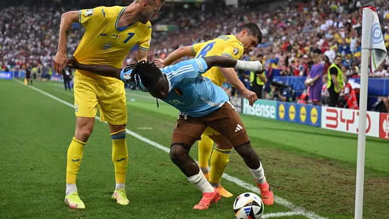

Resumão
Bélgica e Ucrânia empataram por 0 a 0 na Arena Stuttgart na tarde desta quarta-feira. O resultado classificou os belgas para as oitavas da Euro 2024 e eliminou os ucranianos do torneio. A Bélgica vai pegar a França na próxima fase.

Bakayoko protege bola de dois marcadores no final de Ucrânia x Bélgica (Foto: Angelika Warmuth / Reuters)
Bakayoko protege bola de dois marcadores no final de Ucrânia x Bélgica (Foto: Angelika Warmuth / Reuters)
A Ucrânia foi melhor que a Bélgica na partida desta quarta-feira, mas não conseguiu o resultado necessário para avançar às oitavas da Euro. O empate entre Eslováquia e Romênia também tirou as chances de um avanço dos ucranianos sem a vitória contra os belgas. Os jogadores da seleção ficaram extremamente abalados após a eliminação.
Jogadores da Ucrânia, após empate sem gols com a Bélgica (Foto: Lee Smith / Reuters)